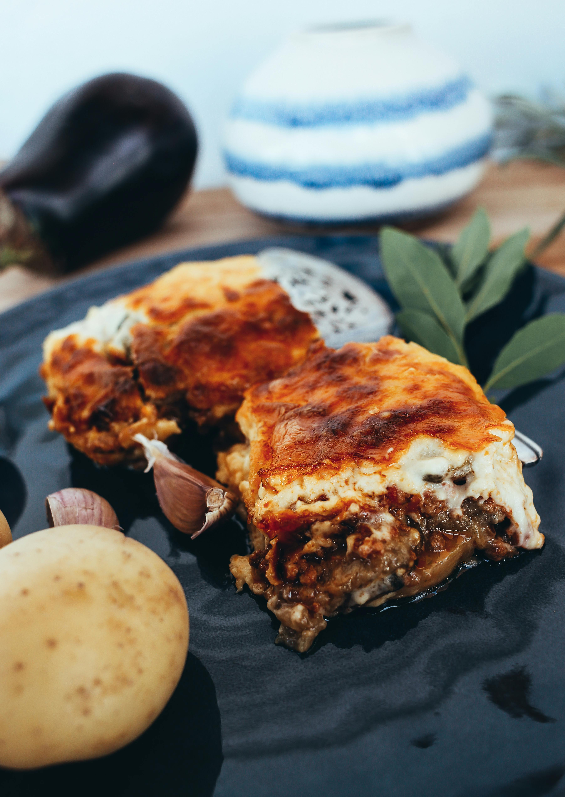

Home
Lasagna Extravaganza

A delicious lasagna for all occasions!
This recipe is fairly simple to implement.
Preparation: 20 minutes.
Cooking time: 70 minutes
Servings: 6
Ingredients
- 16 lasagna noodles
- 500 g ground beef
- 1 clove garkic, minced
- 1 teaspoon parsley flakes
- 1 teaspook dried oregano
- 1 teaspoon olive oil
- salt and pepper, as per taste
- 2 large eggs
- 2 cups (500 g.) cottage cheese
- 1 cup parmesan cheese flakes
- 4 cups of basilic tomato sauce for pasta
Steps
- Preheat the oven to 350 degrees F (175 degrees C).
- Put 8 liters of water in a large pot and bring to a boil. Add lasagna and cook for ~10 minutes ou until al dente. Drain and put aside.
-
Place ground beef, garlic, parsley, oregano and salt and pepper in a pan lightly greased with olive oil on medium heat; cook and stir until the beef is golden brown (~15 minutes).
-
Mix cottage cheese, parmesan cheese and eggs in a medium size bowl until a smooth mixture is obtained. Keep some parmesan cheese for the next step.
-
Using a glass baking pan appropriately sized, grease the surface including the sides. Lay 4 noodles side by side on the bottom. cover the area with the groud beef mixture. Add the cheese layer. Add a thin layer of sauce. Repeat the procedure 3 other times. Cover the dish with an aluminium foil.
-
Bake in the oven until the lasagna is bubbling (~30 min.). Remove foil cook and until the parmesan cover is gratiné (~15 min.). Allow 10 minutes for it to stand. Serve with green vegetables and red wine. Enjoy!